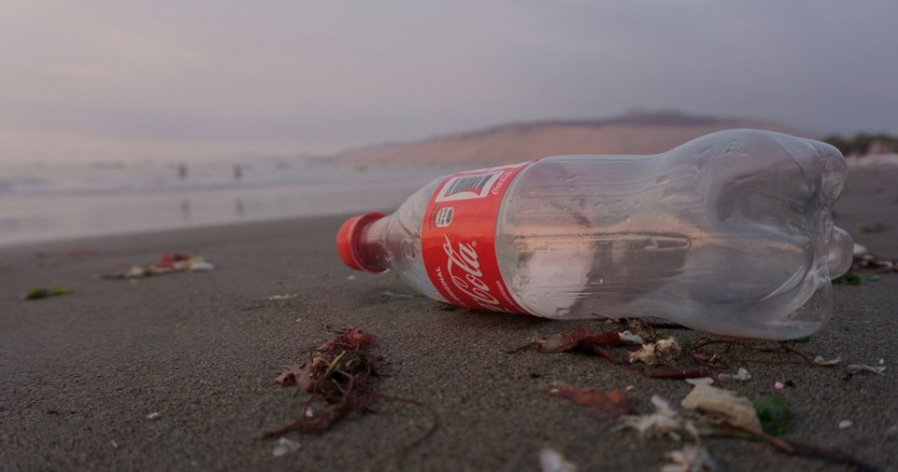

Citând surse din apropierea discuţiilor, Wall Street Journal susţine că grupul Coca-Cola, care deţine deja 30% din acţiunile BodyArmor, va prelua restul de 70% din acţiuni de la fondatorii şi investitorii BodyArmor, pentru a putea rivaliza mai bine cu Gatorade. Un acord ar putea fi anunţat chiar luni, adaugă WSJ. Coca-Cola a preluat o participaţie minoritară la BodyArmor în 2018, devenind al doilea mare acţionar. Fostul star al basketului Kobe Bryant a fost unul dintre primii investitori la BodyArmor, preluând o participaţie în 2013, la doi ani de la lansarea mărcii. Fundaţia care administrează averea lui Kobe Bryant urmează să primească peste 400 de milioane de dolari în schimbul participaţiei sale de peste 5% la BodyArmor, susţin sursele citate de WSJ.Gatorade domină în continuare piaţa băuturilor sportive, chiar dacă vânzările BodyArmor au crescut rapid. Potrivit surselor, în acest an BodyArmor ar urma să genereze vânzări în valoare de 1,4 miliarde de dolari. În ultimii ani, Coca-Cola şi-a eficientizat gama de produse pentru a se concentra pe băuturile în creştere rapidă. În luna mai a acestui an gigantul american a încetat să mai vândă propria sa băutură Coca-Cola Energy pe piaţa din America de Nord dar a păstrat pachetul majoritar la Monster Beverage Corp, unul dintre cei mai mari producători de băuturi energizante din SUA. În 2018, Coca-Cola a cumpărat lanţul de cafenele Costa pentru 5,1 miliarde dolari, în ideea de a profita de o piaţă a cafelei în creştere. Gigantul Coca-Cola Co. deţine un pachet de 23,16% din acţiunile Coca Cola HBC, al doilea producător de băuturi Coca Cola din afara SUA, o firmă care este prezentă şi pe piaţa din România.
Coca-Cola, care s-a situat în fruntea listei în ultimii patru ani de când se realizează acest studiu din 2018, produce aproximativ 10 la sută din recipientele din plastic asociate mărcii care se aruncă în întreaga lume, reprezentând peste 3 milioane de tone de deşeuri, notează studiul, preluat de Agerpres.ro.
Greenpeace semnalează de asemenea că Unilever, una dintre mărcile ce copatronează Summitul Climatic COP26 de la Glasgow, a depăşit anul acesta Nestlé ca poluator cu plastic, ocupând locul trei în lume. În top 10 cei mai mari poluatori cu plastic din lume mai figurează Procter &Gamble, Mondelez, Philip Morris, Danone, Mars şi Colgate-Palmolive. Studiul s-a realizat cu ajutorul a 11.000 de voluntari care au curăţat plajele din 45 de ţări şi care au strâns peste 330.000 de ambalaje din plastic.Greenpeace aminteşte şi impactul poluării cu plastic asupra schimbărilor climatice, având în vedere că 99% din aceste ambalaje sunt fabricate folosind combustibili fosili în industria petrochimică.În timp ce Coca-Cola a fost sursa principală de poluare cu deşeuri plastice în Africa şi Europa, în SUA Nestle este compania care a poluat cel mai mult - Greenpeace descoperind pahare de la Solo Cup şi Starbucks. Corporaţiile, care generează în continuare cantităţi uriaşe de deşeuri, trebuie să îşi asume responsabilitatea unei schimbări fundamentale. Înainte de orice, e nevoie ca acestea să oprească producţia de plastic de unică folosinţă, să adopte practici care stopează irosirea resurselor naturale şi să prioritizeze investiţii considerabile în materiale sustenabile, reutilizabile, prietenoase cu mediul, a avertizat Greenpeace.